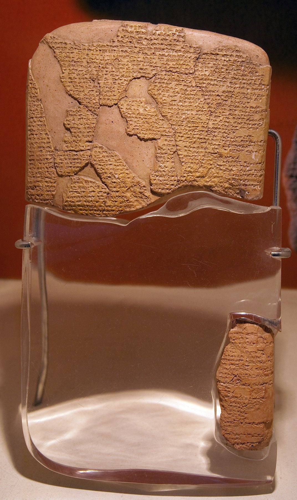

Hittite-Egyptian Peace Treaty Tablet

- Find Name
- Hittite-Egyptian Peace Treaty Tablet
- Description
- The Egyptian-Hittite peace treaty, also called the Eternal Treaty or Silver Treaty, concluded around 1259 BC between Ramesses II of Egypt and Hattusili III of the Hittites after the Battle of Kadesh (c. 1274 BC) and decades of war. It is the oldest known surviving peace treaty and the only ancient Near Eastern treaty preserved in versions from both parties: the Egyptian version engraved in hieroglyphs on the walls of the Ramesseum and the Precinct of Amun-Re at Karnak, and the Akkadian version on clay tablets excavated at Hattusa in 1906-1912 by Hugo Winckler. Its terms cover non-aggression, mutual defense, recognition of sovereignty, and extradition of fugitives; the original silver tablets have not survived, and a replica hangs at United Nations headquarters.
- Historical Period
- New Kingdom, Nineteenth Dynasty
- Evidence Class
- Contextual
- Interpretations
- The treaty is a genuine diplomatic text, but the two versions differ in wording: the Hittite version says the Egyptians sued for peace, the Egyptian version says the reverse, a reminder that ancient treaties, like battle reliefs, served propaganda as well as diplomacy. Its treaty form (mutual obligations, blessings and curses, divine witnesses) is the same form scholars recognize behind biblical covenants, which is its chief value for Bible study. It is sometimes called the Treaty of Kadesh, though the text itself never mentions the battle.
- Alternative Names
- Egyptian-Hittite Peace Treaty; Eternal Treaty; Silver Treaty; Treaty of Kadesh; Ramses-Hattusili Treaty
- Related Places
- Related Books
- Scripture Illuminated
- Biblical Significance
- It is the best-preserved example of the ancient treaty form that shapes the biblical covenants, showing how God bound himself to Israel in a form every ancient reader would have recognized.
- Artifact Date
- c. 1259 BC
- Current Location
- In situ (Karnak and Ramesseum); Akkadian tablets in Istanbul Archaeology Museums, Museum of Anatolian Civilizations, Berlin, and the Hermitage
- Date Discovered
- 1906
- Discovery Location
- Hattusa, Turkey (Akkadian tablets); Karnak, Egypt (Egyptian version)
- Timeline Era
- Exodus and Wilderness
Awaiting Review Not yet checked against scholarly sources. Treat its claims as provisional until this entry is reviewed. About verification
Sources: https://en.wikipedia.org/wiki/Treaty_of_Kadesh
https://www.guinnessworldrecords.com/world-records/first-peace-treaty
https://www.guinnessworldrecords.com/world-records/first-peace-treaty
Last reviewed: not yet reviewed